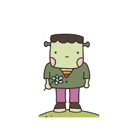
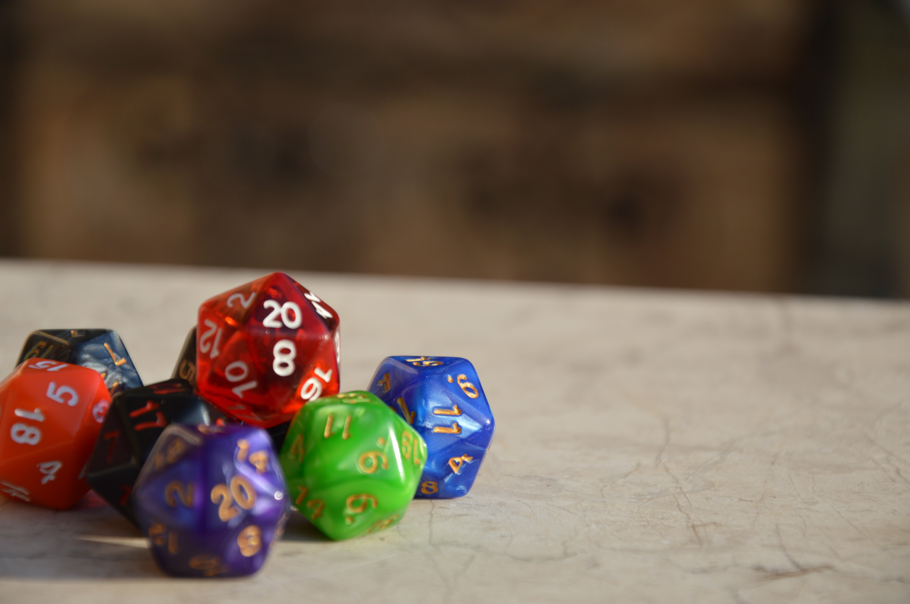
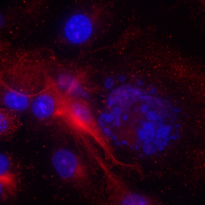
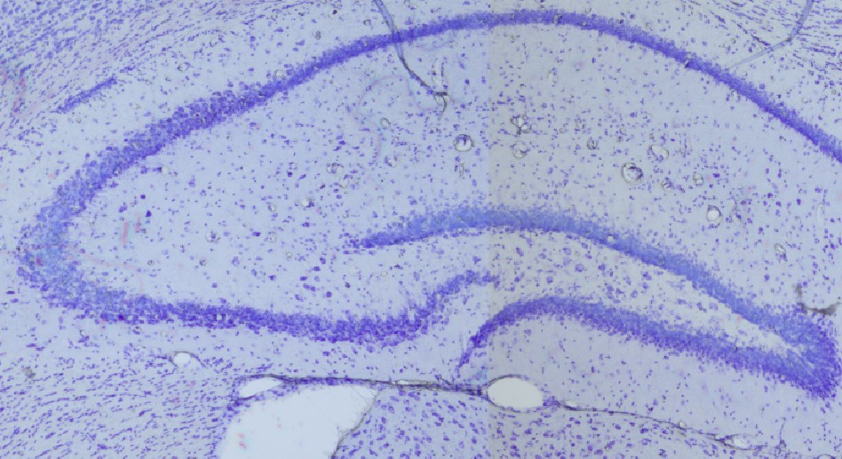

Building a Brain: A Halloween Neuroscience Experience
A fully self-produced theatrical science event for K–6 students, teaching brain anatomy through immersive storytelling, clay models, and a monster that came alive one lobe at a time.
I'm drawn to problems that sit at the edge of disciplines — where biology, communication, and building something useful all have to happen at once. My work spans lab research, curriculum design, and data analysis not because I couldn't pick a lane, but because I think systems are best understood by the people who can see across them. Health tech is where that instinct feels most meaningful to me: it's one of the few fields where getting it right actually changes the quality of care that vulnerable people receive. If that sounds like the kind of thinking your team needs, take a look at my CV.
View CV
A fully self-produced theatrical science event for K–6 students, teaching brain anatomy through immersive storytelling, clay models, and a monster that came alive one lobe at a time.
Designed and executed a mixed-methods study in response to a school-wide mental health crisis — then founded a club and implemented a multi-pronged intervention program that went all the way to the Principal's office.
As a club officer, designed and facilitated immersive language learning experiences — from a staffed konbini simulator with differentiated worksheets to a Shark Tank pitch challenge conducted entirely in Japanese.

As a neuroanatomy TA, co-designed a role-playing game where student teams engineered zombie diseases to take over the human nervous system — learning rigorous pathway reasoning through play.
Comfort Cuff is a wearable concept designed to detect and document invisible pain through physiological signals, supporting patient advocacy and clearer communication between women and their healthcare providers.

Used immunofluorescence microscopy and AI-assisted protocol development to investigate the cytotoxic effects of a commercial energy enhancer on COS7 cells — with AI error-catching as an active part of the scientific process.

Executed the full histological pipeline — from rotary microtomy and Nissl staining through brightfield imaging and volumetric analysis — to compare brain region volumes across young and old mouse populations.
If you'd like to talk about a role, a project, or just have a question — my inbox is open.